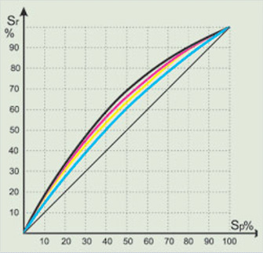
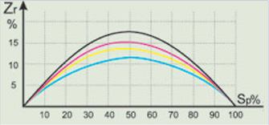

Растискивание
РАСТИСКИВАНИЕ: ЧТО С НИМ ДЕЛАТЬ И НУЖНО ЛИ?
Для того,чтобы ответить на эти вопросы, разберемся, что такое растискивание, как его измеряют, как его величина влияет на тоновоспроизведение и как при необходимости его можно изменить.
Если бумага обладает прозрачностью, то часть светового потока проникает в нее и рассеивается в толще бумажной массы. Часть рассеянного в бумажной массе света Fd поглощается красочным слоем. Таким образом, оптическая плотность измеряемых растровых полей, напечатанных на прозрачных бумагах, оказывается выше, чем оптическая плотность растровых полей с аналогичными по площади красочными элементами, напечатанных на непрозрачных мелованных бумагах, то есть печатные элементы оказываются оптически больше по площади, чем в действительности. В той или иной степени любая мелованная бумага обладает прозрачностью, а следовательно, оптическое растискивание есть всегда.
Измерение растискивания основанно на измерении относительной площади печатного элемента на печатнойпластине (Sp) и на оттиске (Sr) и может осуществляться двумя способами.
Денситометрический способ
Денситометрический способ основан на измерении оптической плотности 100% монохромной плашки (Ds) и оптической плотности измеряемого поля (Dr). Относительная площадь печатного элемента рассчитывается по формуле Шеберстова-Муррея-Девиса: где n - коэффициент светорассеивания Юла-Нильсона, по умолчанию равняется 1. Растискивание рассчитывается по формуле: Zr = Sr - Sp. Денситометрический метод является основным при измерении растискивания. Для этого достаточно иметь денситометр, в котором расчет растискивания производится автоматически. Но денситометрический метод имеет ряд серьезных недостатков.
При печати на высококачественных непрозрачных мелованных бумагах с низким светорассеиванием особых проблем с измерением растискивания не возникает, а вот при печати на бумагах легкого мелования, немелованных бумагах и бумагах с высокой прозрачностью и большими значениями светорассеивания ошибка измерения может достигать критических значений.
Для получения адекватного результата необходимо придерживаться следующих правил
Измерять оптические плотности растровых полей и плашек рекомендуется на черной, не отражающей света подложке. В противном случае на результат измерения может оказывать влияние изображение, напечатанное на оборотной стороне бумаги
Измерять только специальные, предназначенные для определения растискивания, растровые поля (обычно они расположены на контрольной шкале)
Для расчета относительной площади печатных элементов необходимо применять нужный коэффициент Юла-Нильсона, позволяющий учесть светорассеивание, то есть скорректировать ошибку измерения. Диапазон изменения коэффициента Юла-Нильсона от 1 до 3. Величина коэффициента тем больше, чем больше внутреннее светорассеивание бумаги. Например, для глянцевой офсетной бумаги легкого мелования n=1,2–1,25.
МИКРОФОТОГРАФИЯ ЧЕРНОЙ ПЛАШКИ СО СЛЕДАМИ ВЫЩИПЫВАНИЯ
Ошибка в измерении растискивания может возникать в результате неправильного измерения оптической плотности 100% плашки Ds.
При печати на бумагах со слабым поверхностным слоем на растровых полях свыше 90% наблюдается вероятностно распределенный белый шум, возникающий из-за выщипывания - разрушения поверхностного слоя бумаги. В результате измеренная оптическая плотность 100% плашки оказывается заниженной, и, соответственно, расчетное значение растискивания завышено.
Фотометрический способ
Фотометрический способ измерения основан на регистрации (фотографической или электронной) увеличенного изображения растрового поля и определении количества ячеек измерительной матрицы, на которые приходятся красочные элементы.
ФОТОМЕТРИЧЕСКИЙ СПОСОБ ИЗМЕРЕНИЯ ПЛОЩАДИ РАСТРОВОЙ ТОЧКИ: SR=AI/AС, ГДЕ AI - КОЛИЧЕСТВО ЯЧЕЕК, ЗАНИМАЕМЫХ КРАСОЧНЫМ ЭЛЕМЕНТОМ, AС - ОБЩЕЕ КОЛИЧЕСТВО ЯЧЕЕК
Сейчас в производстве применяется только электронный методрегистрации, так как фотографический очень трудоемкий и занимает много времени.
В фотометрическом способе применяется специальный прибор, разработанный для определения относительной площади печатных элементов на формных пластинах, - platereader. Принцип его работы как в обыкновенной цифровой фотокамере: увеличенное изображение печатного элемента поступает на светочувствительную матрицу и фиксируется количество пикселей, приходящихся на растровые элементы. Отношение числа пикселей растровых элементов к общему эффективному количеству пикселей матрицы и является относительной площадью этих элементов.
Фотометрический способ измерения растискивания не имеет изъянов, свойственных денситометрическому. Хотя здесь тоже есть ряд принципиальных особенностей: процесс измерения более длительный по сравнению с измерениями денситометром, а точность получаемого результата сильно зависит от настройки прибора (которая производится автоматически).
Растискивание и Dot Gain
В русском языке в последнее время словом растискивание переводят английское выражение Dot Gain. И хотя означают они примерно одно и тоже, все же между ними есть существенная разница.
Из статьи ясно, что растискивание - это изменение размера точки от печатной формы к оттиску.
Dot Gain означает то же самое, но от цифрового файла к оттиску. То есть он учитывет изменение процента растровой точки на всех промежуточных этапах: преобразования при нелинейном пересчете в растровом процессоре, изменение размеров точки из-за нелинейности выводного устройства, «потравливание» точки при экспонировании в копировальной раме и т. д.
Такое терминологическое несогласование иногда приводит к путанице. В частности, в старых полиграфических учебниках, изданных в Советском Союзе, указывалось, что хорошим растискиванием считается 8–10%. При появлении первых версий программы Adobe Photoshop пользователь с удивлением узнает, что знаменитый «Евростандарт» дает ему 18% растискивания. Выходит, что в СССР стандарты на печать были намного строже импортных? На самом деле нет. Все дело в том, что растискивание и Dot Gain - разные вещи. И, соответственно, измерять и оценивать их надо по-разному. В частности, когда пользователь измеряет 50-процентное поле контрольной шкалы на оттиске, при этом шкала выведена вместе с основным изображением на пленку в фотонаборе, то он измеряет Dot Gain (о чем ему и сообщает измерительный прибор), а вовсе не растискивание в классическом его понимании. В статье описан корректный способ измерения именно растискивания. Поэтому в споре с типографией, какое растискивание должно быть, необходимо сначала договориться о терминах.
ВЛИЯНИЕ РАСТИСКИВАНИЯ НА ВОСПРОИЗВЕДЕНИЕ ПОЛУТОНОВОГО ИЗОБРАЖЕНИЯ
Нормальное растискивание
Допустимое увеличение растискивания
Завышенное растискивание
Чрезмерное растискивание
От чего зависит растискивание?
Печатная основа
Печатная основа
Далеко-далеко за словесными горами в стране, гласных рыбные тексты.
Краска
Краска
Далеко-далеко за словесными горами в стране, гласных рыбные тексты.
Давление
Давление
Далеко-далеко за словесными горами в стране, гласны рыбные тексты.
Правильность передачи листов
Правильность передачи листов
Далеко-далеко за словесными горами в стране, гласных тексты.
Различия линейных скоростей и разница диаметров
Различия линейных скоростей и разница диаметров
Далеко-далеко за словесными горами в стране, гласных ибные тексты.
Периметр
Периметр
Далеко-далеко за словесными горами в стране, гласных итексты.
В производственных условиях кривые растискивания не строят. Измеряют растискивание в двух опорных точках: 40% или 50% и 75% или 80%. Растискивание 50% растрового элемента нормируется не только в типографии, есть госстандарт ОСТ 29.66-90 (еще с советских времен) и современный европейский ISO 12647–2. В стандартах даны рекомендованные зональные значения растискивания и величины отклонения от рекомендованного значения 50% растровых точек для различных типов бумаг и печатных машин. Заказчик вправе требовать от типографии выполнения требований стандарта. В европейском стандарте кроме рекомендованных величин растискивания введено понятие «разброса полутона», или «растискивание в полутонах». Это разница между максимальной и минимальной величинами отклонения растискивания красок от рекомендованного:
| S=max[(Ac-Aco) | (Am-Amo) | (Ay-Ayo)] – min[[(Ac-Aco) | (Am-Amo) | (Ay-Ayo)]
Ac - измеренное значение растискивания голубой краски 50% красочного элемента;
Aco - нормированное значение растискивания голубой краски;
Am - измеренное значение растискивания пурпурной краски;
Amo - нормированное значение растискивания пурпурной краски;
Ay - измеренное значение растискивания желтой краски;
Ayo - нормированное значение растискивания желтой краски.
ИЗМЕНЕНИЕ ЗНАЧЕНИЯ РАСТИСКИВАНИЯ ПРИ ИЗМЕНЕНИИ ФОРМЫ РАСТРОВОЙ ТОЧКИ.
Поскольку величина растискивания зависит от периметра точки, то чем сложнее форма точки, тем больше ее растискивание. Минимальное растискивание - у круглой растровой точки
Компенсация растискивания
Корректная установка параметров растискивания является основным требованием к работе с изображениями. Если значение указано неверно или, например, «по умолчанию», то конечный результат может оказаться непредсказуемым, хотя на экране все выглядит прилично. Это элементарные действия, но о них часто забывают или просто не придают им значения. Тем не менее, в программе Adobe Photoshop есть все необходимое для установки параметров растискивания, причем доступны любые его виды, как по одному числу, так и по специальной кривой. Тем не менее, в программе Adobe Photoshop есть все необходимое для установки параметров растискивания, причем доступны любые его виды, как по одному числу, так и по специальной кривой.
Простейший способ установки растискивания показан на рис. 1. Это стандартное растискивание для «Евростандарта». Оно в данном случае устанавливается одной цифрой. Но следует иметь в виду, что здесь устанавливается не растискивание как таковое, а параметр Dot Gain. Они хоть и похожи, но разница между ними есть. Впрочем, если здесь поставить и собственно параметры растискивания, то большой ошибки не будет, так как фотовывод стараются максимально линеаризовать, хотя это и не всегда возможно.
Впрочем, такой подход может оказаться слишком упрощенным. Растискивание может отличаться в печатных секциях, более того, кривая растискивания может иметь более сложную форму, чем при использовании только одного числа. В этом случае программа дает возможность вместо числа установить компенсацию по специальной кривой. Она получается при установке параметров в нескольких измеренных областях (в нашем случае это 10-, 40- и 80-процентные поля серой шкалы).
Необходимо отметить, что в случае использования числового значения растискивания в программе Adobe Photoshop, оно автоматически считается как растискивание на поле 50% (так принято в Америке, откуда родом Photoshop). В Европе обычно используется замер растискивания по двум полям (например, 40, 80 или 45, 75). Так что выясняя значение растискивания в типографии, и получив в ответ одну цифру (у нас 20%), неплохо бы поинтересоваться, по какому полю оно измерено. Если по 50-процентному, то его можно смело ставить в качестве числового значения, а если по какому-либо другому, то придется пользоваться кривой. Кстати, любопытные могут на досуге попробовать «поиграть» со значением растискивания в поле на рис.2. И посмотреть, что будет происходить с изображением.
Дело в том, что диапазон растискивания, определенный стандартом, довольно большой, к тому же, отклонения от рекомендуемых значений для различных цветов CMY могут быть разноными. В результате возможно появление серьезного цветового дисбаланса. Например, если величина растискивания одной из красок увеличится на максимально допустимую стандартом величину, и величина растискивания остальных тоже увеличиться, то в целом цветовой баланс изображения не изменится. Произойдет только небольшая потеря градаций в тенях. Но если отклонения одной или двух красок будут разнонаправлеными даже в пределах норм, то появятся заметные цветовые отклонения, которые в ряде случаев не удастся компенсировать и изменениями толщины красочного слоя.
Заказчик может требовать от типографии выполнения требований стандарта. Однако, в силу физической изношенности оборудования многие типографии не в состоянии удовлетворить требованиям стандарта по растискиванию, даже при соблюдении всех технологических норм.
Толщина красочного слоя
(оптическая плотность подаваемой краски)
Толщина красочного слоя является практически единственным изменяемым параметром, позволяющим производить подгонку по цвету в процессе печати. Увеличение толщины краски неизменно приводит к увеличению растискивания. Данный параметр в большинстве типографий нормируется внутренними документами, поэтому в идеале считается константой.
В этой статье мы не будем подробно останавливаться на причинах растискивания. Как видите, их довольно много. Важно правильно его измерять и уметь оценивать результаты.
Итак, что такое растискивание и как его измеряют, мы выяснили, теперь рассмотрим, что с ним можно сделать.
Как уже отмечалось, кривая растискивания определяет градационную кривую печатного процесса, которая в свою очередь влияет на цветовоспроизведение изображений при печати. В большинстве случаев именно растискивание, а не оптическая плотность, определяет цветовоспроизведение. Таким образом, контроль растискивания является необходимым условием для получения удовлетворительного результата.
Нет ничего страшного, если величина растискивания превышает норму на 5–7%. Это обычно связано с ошибками измерения.
Таким образом, контроль растискивания является необходимым условием для получения удовлетворительного результата. Нет ничего страшного, если величина растискивания превышает норму на 5–7%. Это обычно связано с ошибками измерения.
ГРАДАЦИОННАЯ КРИВАЯ ПЕЧАТНОГО ПРОЦЕССА
Нелинейная форма определяется наличием растикивания. Чем более изогнута кривая, тем выше растискивание
Иногда для большей наглядности строят отдельно график растискивания
Несколько правил
При оценке растискивания важно соблюдать несколько правил
-
Если есть сомнения в результатах измерения (например, визуально поле соответствует заданной процентовке растрового поля, а денситометр показывает растискивание, превышающее 20%), необходимо провести измерение другим способом или, если такой возможности нет, повторить печать, не изменяя настроек машины на более плотной мелованной бумаге с качественным мелованным слоем и сравнить результаты. Если такой возможности нет - продолжать печать, так как, скорее всего, это ошибка измерения.
-
Причиной высоких значений растискивания, как правило, является не давление между печатными парами или низкая вязкость краски, а двоение растровых точек. Двоение часто наблюдается на листовых машинах в цехах, не оборудованных климат-контролем, при печати на бумагах малой плотности. Характерным признаком двоения является значительное отличие растискивания в клапане листа и хвосте. Устранить этот дефект полностью без проведения серьезных операций (покупки климатической установки, чистки и регулировки передаточных клапанов и т. п.) практически невозможно.
-
Двоение, дробление, проскальзывание, превышение давления между печатными парами увеличивают растискивание и являются дефектами, приводящими к браку. И заказчик в праве требовать их устранения.
Растискивание - это явление природы, и если оно не усугубленно дефектами, описанными в третьем пункте, следует воспринимать его как должное.
Сделать с ним что-либо практически невозможно. Его надо учитывать при цветоделении или растрировании. Поэтому основное требование к растискиванию - прогнозируемость и постоянство.
2016© ООО «Пушкинская площадь». Полиграфический комплекс.
Все права защищены.